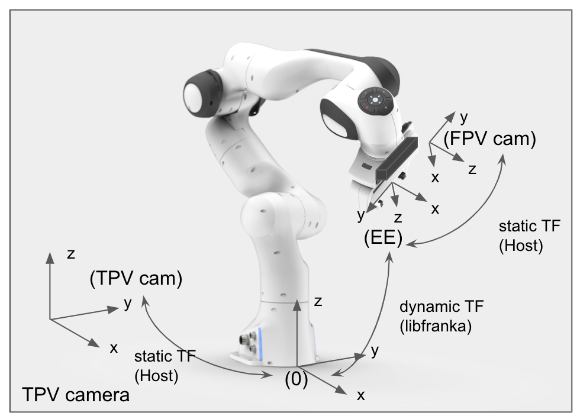

Robot speed
MSRM Panda Teleop Web Interface
set speed using a slider
use joystick or WASD, IJKL, or arrow keys on keyboard to move robot
S: -z W: +z
A: -x D: +x
up: -y down: +y
J: -pitch L: +pitch
K: rollL I: rollR
Q: twistCW E: twistCCW